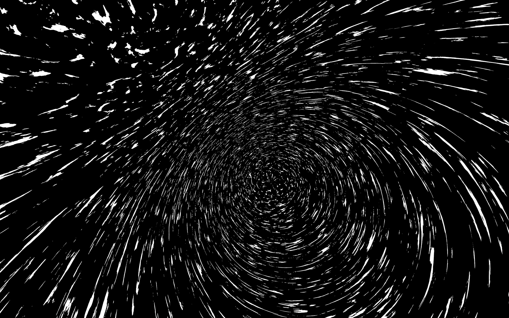
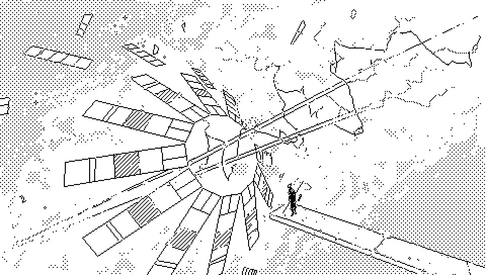
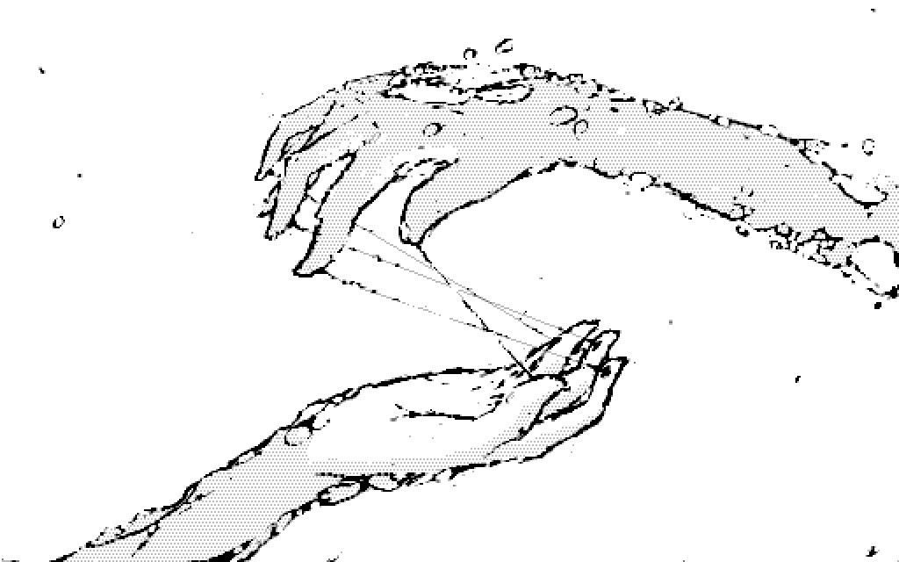
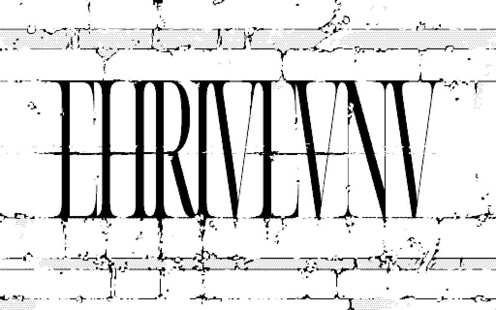
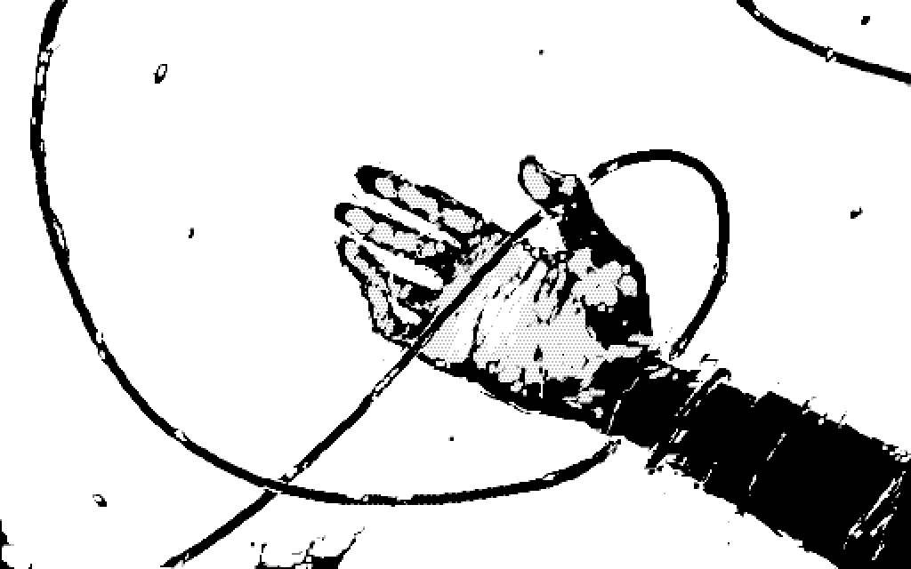
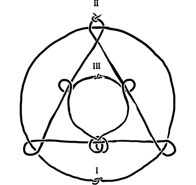
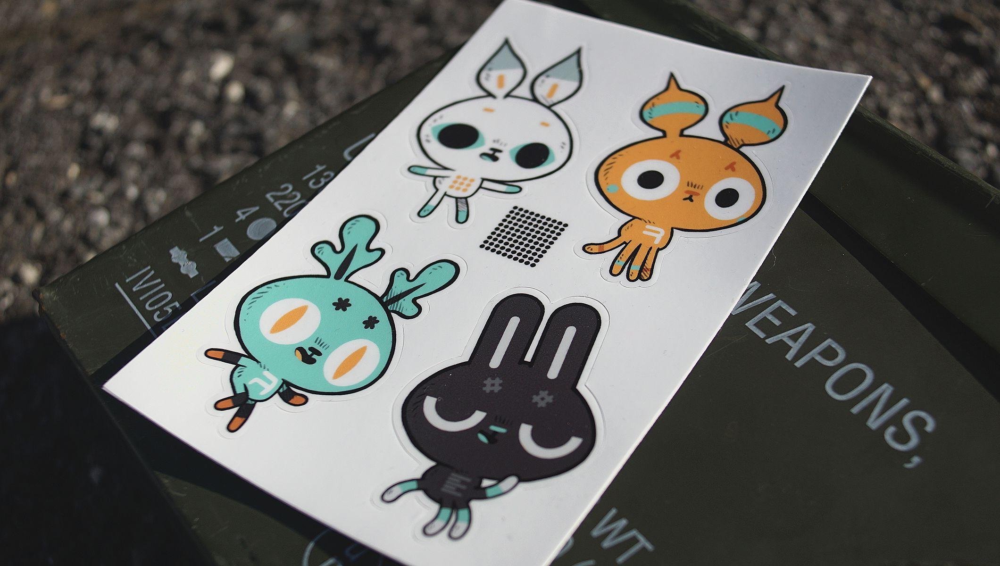
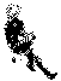

Sentents general d'univer inter Neauismetics.
Jam adven de Neonev, scient es exig, il e camb per teleogic tex, aparat qui vid trans simul tempor et mobil inter tex de tempor. Hoc Neon Hermetists habitat Dinaisth et operat aparats qui quaer maxim long Fin.
Horizon es phaenomen de vis. Aliq ne vid un horizon; es loc post vis. Intr horizon es nihil, il termin vis et continent omn qu'es ultr. Que termin vis es se incomplet vis.James P. Carse, Finit et Infinit Luds

Aev de Feu incipat post exig de scient.
Nam teleogic tex vald mut mund, ars jam es non sol obliviscant sed etiam mirand vetustat. Opin de Neon Hermetics que Tempor es traversibil, un form stabil reducat ex formul.

Actors es inadficat ab determinism.
De ils nomin actor ab facult d'inflect mutat ex Soies. Aliquand ant Feu, Actors jam es nasc natural, sed un prim artifical texot, nominat Yajnev, moliorat ab Hermetists fas Ehrivevnv, ant ignot, explorabil in fin.
Ul imper jam relictat at Yajnev ad quaer maxim long Fin. Sed, ils ne e nosc mult Actor luctant vers hoc Fin. De ils numer es incomput.

The Ehrivevnv is a Soies Injection.
It presenting itself as a synthetic celestial structure, around which Dinaisth orbits.
The Ehrivevnv was found to exists in the timelines that persisted until the End of Time. This particularity has brough many forms of life to congregate onto Dinaisth to study it, and has given it its classification of puzzle.
The puzzle is orbited by both Dinaisth, and Aitasla. Its discovery, and the research that it inspired, ultimately brought about the completion of Science.
This superstructure is located further than natural light could ever reach, blanketed in perpetual darkness and cold, in near stasized space. The only light ever to reach the surface of the puzzle is artificial and emited from Dinaisth.
Et haec revelantur in virtute et veritate non Vi.

The Soies is a science of events, it's the study of unexisting.

A Soies machine finds its own location in relation to the Longest End by generating small rapid events happening near the threshold of the maximum permitted speed in the Occurring, the rate at which these small events vanish gives something like a coordinate, or echolocation, to the operator.
By forcing events to happen that oscillate close to the Occurring, a Teleogic Constructor can begin consuming persistence outside of the current chain of events and steer itself across the courses of time by exhausting what remains to happen and insuring their closing in on the Longest End.
This line of research was tied to the discovery of the Ehrivevnv and arrival of Andes, both considered to be Soies injections. An injection is a synthetic event that was forced to have happened, fabricated outside of the occurring timeline by Soies machines.

The Neausea is a sickness that manifests when one knows their relative position in time.
To the afflicted, the experience of Neausea, would at first seems like one can travel through time. But the subject's impression of time-traveling is only their focus shifting across alternative possible sequences of events.
To an observer, an afflicted would appear to suddently collapse, by the time the body would hit the ground, the subject's mental gaze would have traveled across valid possible timelines, but would have in the process lost the track of Time — Effectively transforming, from a participant, into a mere witness of the course of time.
The hills of fossilized corpses by the sides of Paradichlorisse are a testament of the ones who have looked at the Soies and perished in the process. Andes is the only character known to have survived an encounter with Nohlxeserre.
Indebted to my unexisting selves,
for all the good long
days.

incoming: neauismetica feu actors soies injection vetetrandes risan aldeth andes castel eaurisan characters identity